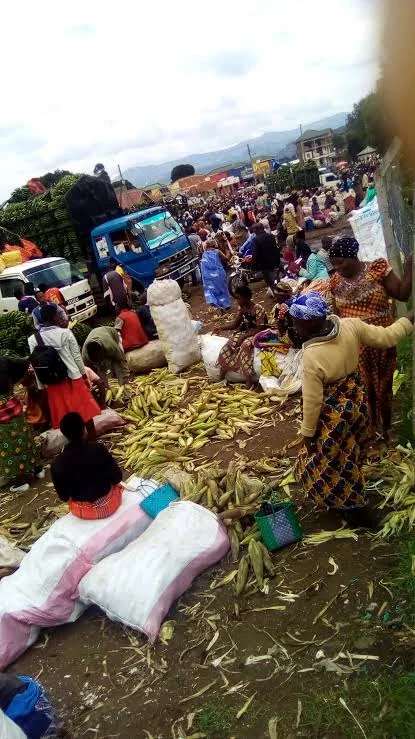
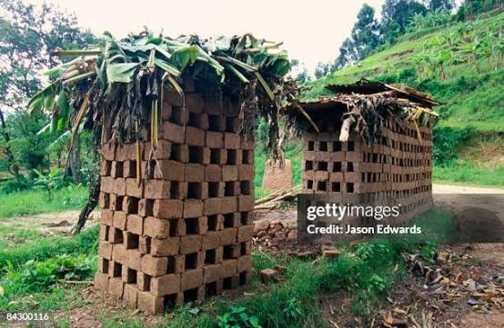
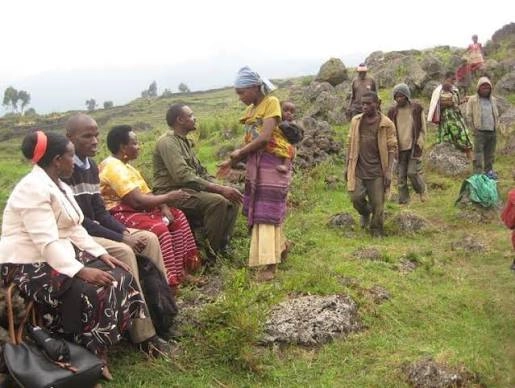

Summer Business Expo
Local companies present new products and services to the community.

Kisoro City Chamber of Commerce
A community hub for visitors, residents, and local businesses.
Explore the history, culture, and local events that make Kisoro City a welcoming place for business and community life.
Kisoro City has grown as a regional center, celebrating local heritage, small business, and community connections.
Kisoro City serves a growing community of residents and visitors. The local economy is supported by small business, recreation, tourism, and healthcare services.
Local companies present new products and services to the community.
Join the Kisoro City Chamber for a guided tour of the downtown historic district.


